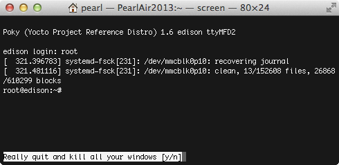

Using Screen - Mac / Linux
Table of contents
Cancel/exit an already submitted command
If you submitted a command and it is taking a long time to complete, or you do not want to complete it, quit the process using Ctrl+C.
-
Make sure the Terminal window has focus.
-
Type Ctrl+C to send a break command.
Disconnect from the serial connection
Failing to close the Screen connection fully may stop you from being able to log in next time without rebooting the IoT board. Close Screen sessions every time you are done with your serial connection.
-
To exit your Screen session completely:
-
Make sure the Terminal window has focus.
-
Type Ctrl+A (you won’t see anything displayed yet)
-
Then type Ctrl+\ (the forward slash is located below Delete)
-
-
At the bottom of the Terminal window, you should see “Really quit and kill all your windows [y/n]”. Type “y”.

- You are now back in your regular Terminal command line.